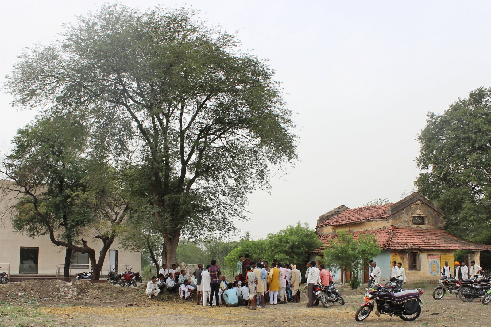

State Executive, Panchayati Raj & Amendments
A comprehensive visual encyclopedia covering the State Executive (Governor, Chief Minister, Advocate General), Panchayati Raj (73rd Amendment, Balwant Rai Mehta), Urban Local Bodies (74th Amendment), Emergency Provisions (Articles 352, 356, 360), and Landmark Amendments from the 1st to the 106th Amendment Act.
1. The State Executive & Legislature (Articles 153–213)
The Governor's dual role, Council of Ministers, Advocate General, and Bicameral Assemblies
Governor (Art 153–161)
Constitutional head of the State and agent of the Centre. Appointed by President; holds office during "pleasure of President" (no fixed tenure). Minimum age: 35 years. 7th Amendment 1956 enabled one person to be Governor of two or more States.
Ordinances (Art 213)
Promulgated when State Legislature is in recess. Has same force as legislative Act. Must be approved within 6 weeks from reassembly. Max life is 6 months + 6 weeks. Cannot issue ordinance without President's instructions on bills requiring presidential assent.
CM & Council (Art 163–164)
Real executive head. Appointed by Governor. Council of Ministers is collectively responsible to Vidhan Sabha. Under 91st Amendment 2003, size of State Ministry shall NOT exceed 15% of Assembly strength, with a minimum of 12 ministers.
Advocate General (Art 165)
Highest law officer of the State (State counterpart of Attorney General). Appointed by Governor; must be qualified to be a High Court judge. Right to speak and participate in Assembly proceedings, WITHOUT the right to vote.
Bicameral State Legislatures in India (Article 169)
Only 6 States have a Legislative Council (Vidhan Parishad): Andhra Pradesh, Bihar, Karnataka, Maharashtra, Telangana, and Uttar Pradesh.
Parliament can create or abolish a Legislative Council by simple majority if the Legislative Assembly passes a resolution by special majority.
2. Local Self-Government: Panchayati Raj & Municipalities
73rd & 74th Constitutional Amendment Acts, 1992 • The 3rd Tier of Indian Democracy

Gram Sabha & Panchayati Raj Institutions (PRIs)
First launched in Nagaur, Rajasthan on October 2, 1959. Constitutionalized by the 73rd Amendment Act 1992 (Part IX, 11th Schedule with 29 subjects).
Panchayati Raj Institutions (PRIs)
- • Part Added: Part IX (Articles 243 to 243O).
- • Schedule Added: Eleventh Schedule (29 Functional Matters).
- • 3-Tier Structure: Gram Panchayat (village), Panchayat Samiti (block), Zilla Parishad (district). (2-tier allowed for states with population <20 lakhs).
- • Women Reservation (Art 243D): Mandatory not less than 1/3rd (33%) of total seats and chairpersons.
- • Institutions: State Election Commission (Art 243K) & State Finance Commission (Art 243I).
- • PESA Act 1996: Extended PRIs to 5th Schedule areas (Bhuria Committee).
Urban Local Bodies (Municipalities)
- • Part Added: Part IXA (Articles 243P to 243ZG).
- • Schedule Added: Twelfth Schedule (18 Functional Matters).
- • 3 Types of ULBs: Nagar Panchayat (transitional), Municipal Council (smaller urban), Municipal Corporation (larger urban).
- • Committees: Wards Committees (Art 243S), District Planning Committee (Art 243ZD), Metropolitan Planning Committee (Art 243ZE).
- • Reservations: 1/3rd seats for women; SC/ST proportional reservation.
3. Emergency Provisions: Part XVIII (Articles 352–360)
Transforms India's federal structure into a unitary system during national crises
| Emergency Type | Grounds of Proclamation | Parliamentary Approval & Majority | Maximum Duration | Impact on Rights & Historical Declarations |
|---|---|---|---|---|
| National Emergency (Article 352) | War, External Aggression, or Armed Rebellion (44th Amend replaced 'internal disturbance') | Within 1 month by Special Majority (majority of total membership + 2/3rd present & voting) in both Houses | 6 months at a time; can be extended indefinitely with 6-month approvals | Art 19 automatically suspended under Art 358. Articles 20 & 21 can NEVER be suspended! Declared 3 times: 1962 (China), 1971 (Pakistan), 1975 (Internal disturbance). |
| President's Rule / State Emergency (Art 356 & 365) | Failure of constitutional machinery in State (Art 356) or failure to comply with Union directions (Art 365) | Within 2 months by Simple Majority in both Houses | 6 months at a time; Maximum 3 years (beyond 1 year requires EC certificate & National Emergency) | Governor runs administration on President's behalf. Parliament makes laws for State. S.R. Bommai (1994) made Art 356 subject to judicial review. |
| Financial Emergency (Article 360) | Threat to financial stability or credit of India or any part thereof | Within 2 months by Simple Majority in both Houses | Continues indefinitely until revoked; no periodic parliamentary approval needed | Centre can direct reduction of salaries of public servants and SC/HC judges. NEVER declared in India so far! |
4. Landmark Constitutional Amendments (1st to 106th Amendment Acts)
High-yield revision matrix for UPSC, APSC & State Public Service Commission exams
| Amendment Act & Year | Key Provisions & Changes Made | Historical / Prelims Significance |
|---|---|---|
| 1st Amendment Act, 1951 | Added the Ninth Schedule (Art 31B) to protect land reforms from judicial review; added 3 grounds of reasonable restrictions to freedom of speech under Art 19(2). | Enacted by Provisional Parliament before 1st General Election |
| 7th Amendment Act, 1956 | Implemented State Reorganization Act (14 States and 6 UTs); abolished Class A, B, C, D states; provided for common High Courts (Art 231) and appointment of same Governor for multiple states. | Fazl Ali Commission implementation |
| 42nd Amendment Act, 1976 | "Mini-Constitution": Added 'Socialist', 'Secular', 'Integrity' to Preamble; added Part IVA (Fundamental Duties, Art 51A); gave DPSP primacy over FRs; transferred 5 subjects (Education, Forests, Weights/Measures, Protection of Animals/Birds, Administration of Justice) to Concurrent List. | Swaran Singh Committee recommendations |
| 44th Amendment Act, 1978 | Restored civil liberties: deleted Right to Property from Part III (moved to Art 300A); replaced 'internal disturbance' with 'armed rebellion' in Art 352; safeguarded Articles 20 and 21 from suspension during emergency. | Morarji Desai Janata Party Government |
| 52nd Amendment Act, 1985 | Introduced the Tenth Schedule (Anti-Defection Law) disqualifying MPs and MLAs for defecting from their political parties. | Rajiv Gandhi administration |
| 61st Amendment Act, 1988 | Lowered the voting age for elections to the Lok Sabha and State Legislative Assemblies from 21 years to 18 years (amended Art 326). | Expanded democratic franchise to youth |
| 73rd & 74th Amendments, 1992 | Constitutionalized Panchayati Raj (Part IX, 11th Sched - 29 items) and Municipalities (Part IXA, 12th Sched - 18 items) with 33% mandatory reservation for women. | P.V. Narasimha Rao Government |
| 86th Amendment Act, 2002 | Made Elementary Education a Fundamental Right under Article 21A (6–14 years); modified Art 45 (DPSP); added 11th Fundamental Duty under Art 51A(k). | Implemented via Right to Education (RTE) Act 2009 |
| 91st Amendment Act, 2003 | Capped the size of the Union and State Council of Ministers to 15% of the Assembly/Lok Sabha strength (min 12 in States); tightened Anti-Defection law by deleting the 1/3rd split exemption. | A.B. Vajpayee Government |
| 101st Amendment Act, 2016 | Introduced the Goods and Services Tax (GST) regime; inserted Art 246A (concurrent tax power), Art 269A (IGST), and Art 279A (GST Council chaired by Union Finance Minister). | Effective July 1, 2017 ("One Nation, One Tax") |
| 102nd Amendment Act, 2018 | Conferred constitutional status on the National Commission for Backward Classes (NCBC) by inserting Article 338B and Article 342A. | Parity with NCSC (Art 338) & NCST (Art 338A) |
| 103rd Amendment Act, 2019 | Provided for up to 10% reservation for Economically Weaker Sections (EWS) in higher educational institutions and initial public employment (Articles 15(6) and 16(6)). | Upheld by SC in Janhit Abhiyan Case (2022) |
| 104th Amendment Act, 2019 | Extended the reservation of seats for SCs and STs in Lok Sabha and State Assemblies for another 10 years (up to 2030); ended the nomination of 2 Anglo-Indian members to Lok Sabha and State Assemblies. | Articles 331 and 333 discontinued |
| 106th Amendment Act, 2023 | Nari Shakti Vandan Adhiniyam: Reserves one-third (33%) of all seats for women in the Lok Sabha, State Legislative Assemblies, and the Legislative Assembly of NCT of Delhi (Articles 239AA, 330A, 332A, 334A) for 15 years. | Effective after subsequent census & delimitation |
Active Recall Flashcards (3D Flip)
Click any card to flip between Question and Prelims Answer
Prelims Self-Assessment Quiz
Test your mastery over Governor powers, Panchayati Raj 73rd amendment, Emergency provisions, and landmark amendments